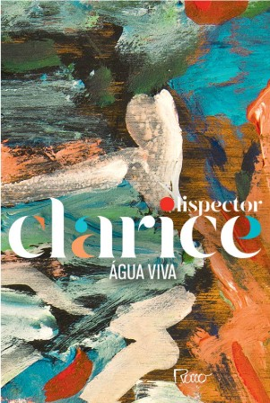
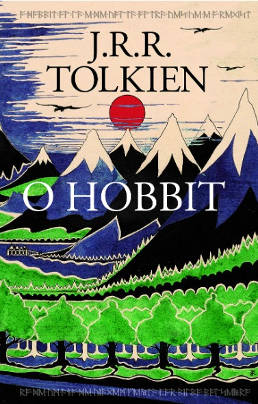
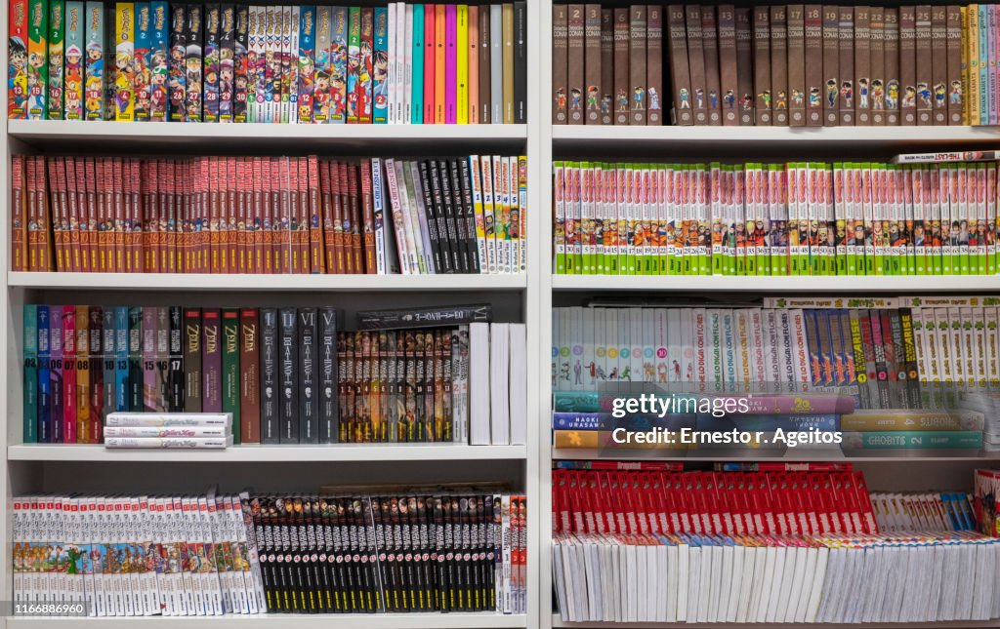

Acervo
O acervo da Biblioteca Vozes é composto por mais de 46 mil itens, oferecendo uma coleção ampla, diversificada e permanentemente atualizada. Com ênfase na literatura brasileira e estrangeira, o acervo contempla obras de diferentes tradições literárias, incluindo as alemã, japonesa, italiana e norte-americana. Além disso, disponibiliza publicações nas áreas de Filosofia, Religião, Desenvolvimento Pessoal, Esportes, Biografias, História e demais campos do conhecimento, atendendo às necessidades de estudo, pesquisa, formação e incentivo à leitura da comunidade.

Destaques do Acervo Geral

Clarice Lispector

J.R.R. Tolkien
A Biblioteca Vozes disponibiliza um acervo de referência destinado à consulta local, composto por obras essenciais para pesquisa, estudo e apoio às atividades acadêmicas e culturais. Entre os materiais disponíveis encontram-se dicionários gerais e especializados, enciclopédias, atlas geográficos e históricos, almanaques, manuais de normalização da ABNT, anuários estatísticos, bibliografias e obras de referência nas áreas de Ciências Humanas, Ciências Sociais, Linguagens, Ciências Exatas e Naturais. Esse conjunto de materiais oferece suporte confiável para estudantes, pesquisadores e toda a comunidade.
A Gibiteca da BBV é um espaço dedicado à preservação, exposição e empréstimo de quadrinhos, oferecendo aos leitores uma ampla variedade de títulos nacionais e internacionais. Com foco na diversidade de estilos, gêneros e narrativas, a Gibiteca busca promover a cultura dos quadrinhos como forma de expressão artística e literária, incentivando a leitura, a criatividade e o interesse pela arte sequencial.

Destaques da Gibiteca
Nº 1/ 2007
Turma da Mônica
Vol. 1: Marvel Action
Delilah S. Dawson